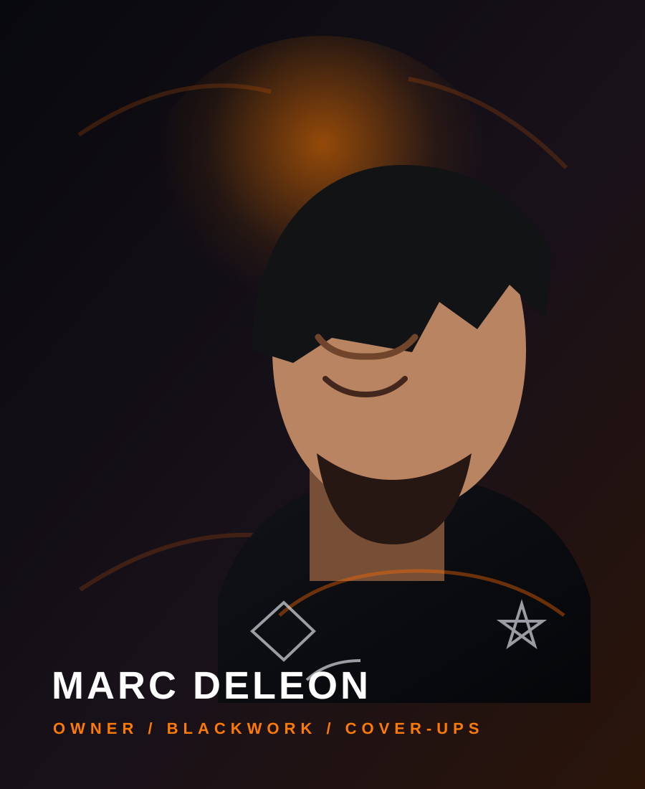

OWNER / FOUNDER
Marc DeLeon
30 Years of Downtown Bakersfield History
THE LEGACY
Marc DeLeon built Mad Dog Tattoo from the ground up when 19th Street looked a lot different. He specializes in Blackwork, Old School color, and Cover-Ups.
His philosophy is rooted in longevity: "He'd rather tell you 'no' than let you walk out with something that won't hold up in the long run. Real work for real people."
#Blackwork
#OldSchool
#CoverUps
#BakersfieldOriginal
GOOD FITS
Large custom blackwork pieces, traditional American flash, and complex cover-ups of old names or blown-out ink.
HARD NO'S
Micro-tattoos that fade in two years, watercolor trends, or anything that won't stand the test of time.